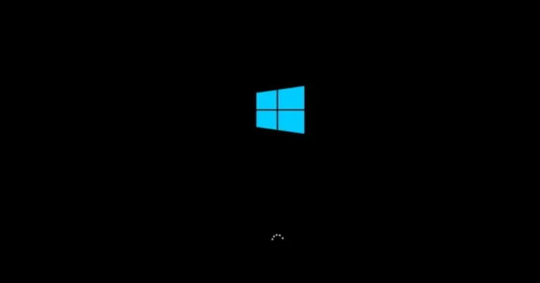
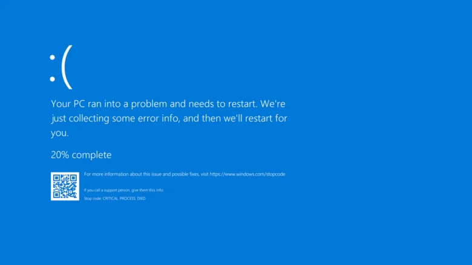
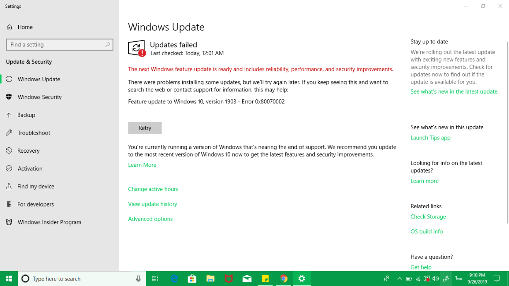
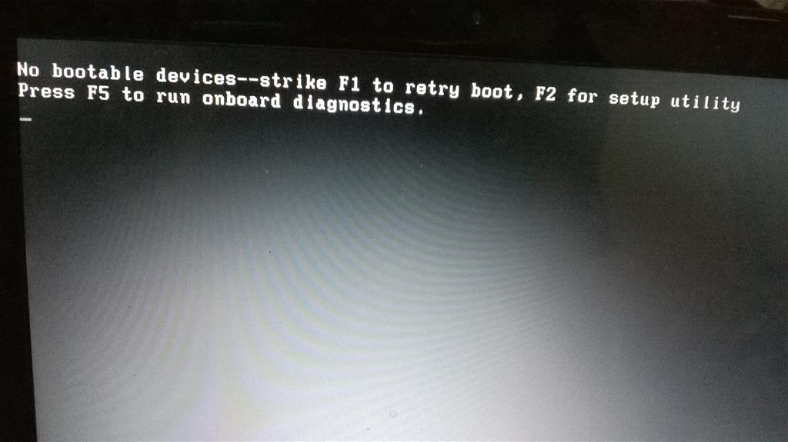
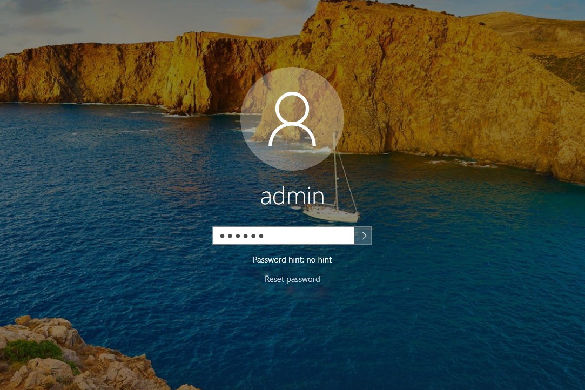
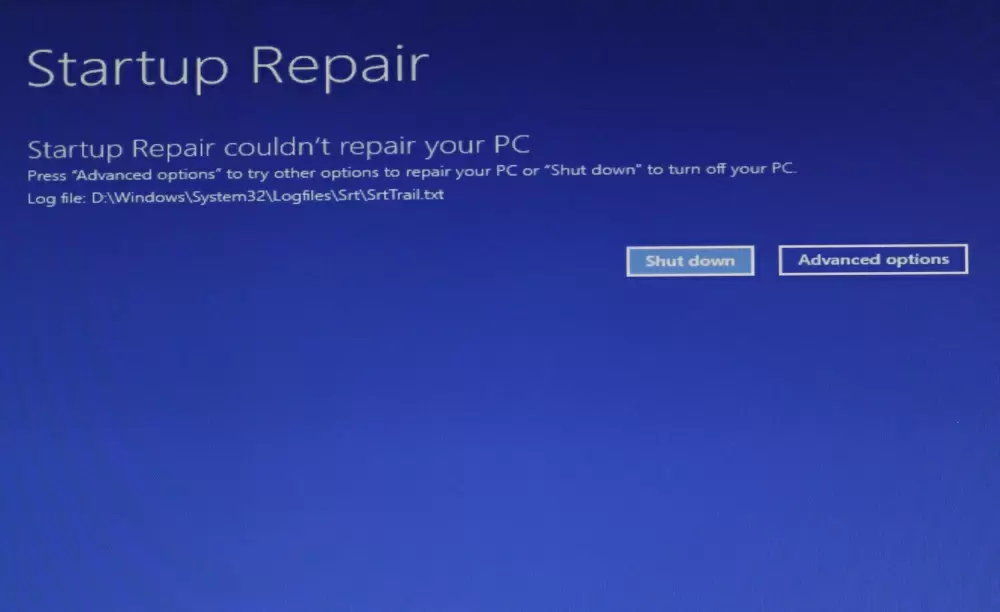
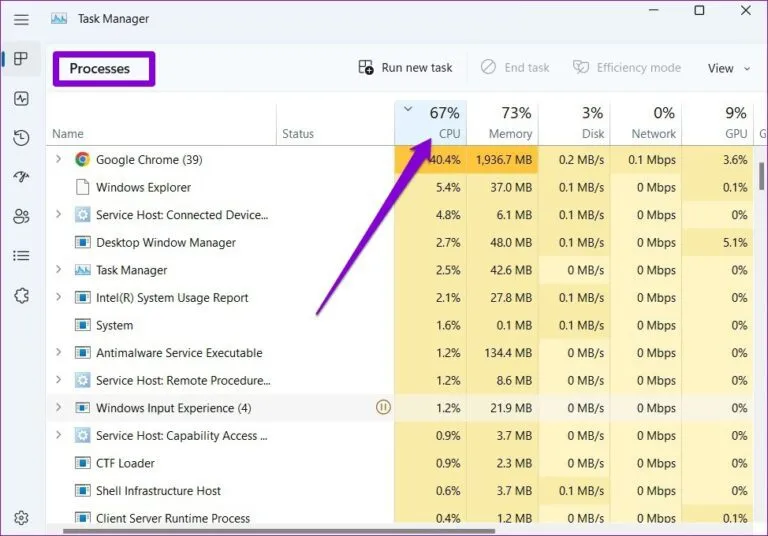
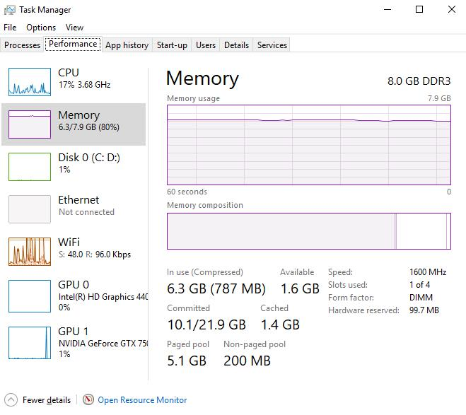
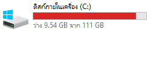

Operating System
Windows เปิดไม่ขึ้น
เปิดเครื่องแล้วไม่สามารถเข้าสู่ระบบ Windows ได้
เลือกปัญหาที่ต้องการดูวิธีแก้ไข
เลือกปัญหาที่ต้องการดูวิธีแก้ไข

เปิดเครื่องแล้วไม่สามารถเข้าสู่ระบบ Windows ได้
Windows ใช้เวลานานกว่าจะเข้าสู่หน้า Desktop
ระบบปฏิบัติการค้างหรือไม่ตอบสนองระหว่างใช้งาน

Windows แสดงหน้าจอสีฟ้าพร้อมรหัสข้อผิดพลาด

ไม่สามารถดาวน์โหลดหรือติดตั้ง Windows Update ได้

ระบบแจ้งว่าไม่พบอุปกรณ์สำหรับบูตระบบ
เข้าสู่ระบบแล้วไม่สามารถเข้า Desktop ได้ตามปกติ

ไม่สามารถเข้าสู่บัญชี Windows เนื่องจากลืมรหัสผ่าน

ไฟล์ระบบเสียหายทำให้ Windows ทำงานผิดปกติ

CPU ทำงานหนักหรือใช้งานสูงผิดปกติ

ระบบใช้หน่วยความจำ RAM สูงจนเครื่องทำงานช้า

ไดรฟ์ระบบมีพื้นที่เหลือน้อยหรือเต็ม